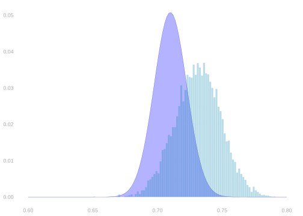
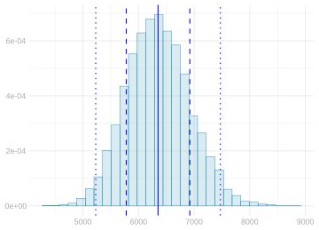
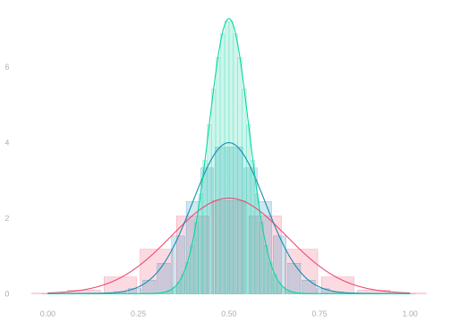

Normal Approximation and Sample Size Calculation
Bootstrapping Proportions


- When we’re estimating a proportion, the bootstrap sampling distribution is exactly the same as
the parametric estimate we get by plugging the sample proportion into the Binomial distribution’s formula.- That’s good when we’ve sampled with replacement, so our sampling distribution is actually Binomial.
- It’s less good when we’ve sampled without replacement, so our sampling distribution is Hypergeometric.
- Using this equivalence, we’ve talked a lot about how the bootstrap works in this special case.
Normal Approximation



- A distribution’s normal approximation is a normal distribution with the same mean \theta and standard deviation \sigma.
- These show up everywhere because they’re easy to work with and the approximation tends to be good.
- Approximation is good, in particular, for the distribution of a mean of independent random variables.
- Or independent enough ones.
- Above, we see three Binomial distributions with their normal approximations:
- the distributions of the mean of 10, 30, and 90 coin flips.
- These approximations get increasingly accurate as the number of flips n increases.
- That’s universal. It always happens with means. It’s called the Central Limit Theorem.
Calibration Using Normal Approximation


- Calibrating interval estimates using normal approximation is easy.
- You estimate the standard deviation of your point estimator.
- You go out ± 1.96 (estimated) standard deviations from your point estimate.
\text{interval estimate} = \hat\theta \pm 1.96 \hat\sigma
- We’re choosing our interval’s width essentially the same way we always have.
- We’re still using the middle 95% of an estimate of the sample distribution.
- It just looks different because we have a convenient formula for that width.
- Above left, you can see two interval estimates superimposed on the sampling distribution of a sample proportion.
- The red one is calibrated using the binomial as before.
- The blue one is calibrated using normal approximation.
- Above right, you can see the binomial and normal sampling distribution estimates these are based on.
When This Works


- This all works if three things are true.
- The sampling distribution needs to be in the right place, i.e. centered on the estimation target.
- The sampling distribution needs to be approximately normal.
- The estimated sampling distribution has approximately the right width.
- The first is called unbiasedness of our point estimator.
- Most of the estimators we’ll talk about in this class are unbiased or almost unbiased.
- We’ll check this for the sample proportion in a minute.
- The second is something that the CLT tells us tends to happen, especially for large n.
- Talking about the accuracy of normal approximation is interesting, but beyond the scope of this class.
- I’d need at least a couple weeks to teach you about what’s going on there.
- But you can take it as a given for most of the estimators we’ll study.
- The third amounts to getting a good estimate of our point estimator’s standard deviation.
- We’ll work on this, again for the sample proportion, later today.
- And we’ll talk about this for other estimators throughout the semester.
- It is, however, a bit of a pain. That’s one reason you might prefer the bootstrap.
A Proportion when Sampling with Replacement



- When we sample from a binary population with replacement, our sample proportion’s distribution is Binomial.
- And we can estimate that distribution by plugging our sample proportion into the Binomial formula.
- But its normal approximation tends to be very good, so we can get away with estimating that instead.
\begin{aligned} \text{normal approximation} & \ f_{\theta,\sigma}(x) \qfor \sigma^2 = \frac{\theta(1-\theta)}{n} \\ \text{corresponding estimate} & \ f_{\hat\theta, \hat \sigma}(x) \qfor \hat\sigma^2 = \frac{\hat \theta(1-\hat \theta)}{n}. \end{aligned}
- Pictured: three Binomial distributions with their normal approximations.
- These are the distributions of the sample proportion when we draw a samples of size 10, 30, and 90 …
- … with replacement from a binary population in which the proportion of ones is \theta=.5.
A Proportion when Sampling without Replacement



- When we sample from a binary population without replacement, our sample proportion’s distribution is Hypergeometric.
- And we can estimate that distribution by plugging our sample proportion into the Hypergeometric formula.
- But again, its normal approximation tends to be very good, so we can get away with estimating that instead.
- When we do this, we can see where we go wrong when use use the Binomial—or equivalently the bootstrap.
- When our sample size \color{#404040}n is a meaningful fraction of our population size \color{#404040}m, the Binomial is too wide.
- The Hypergeometric’s standard deviation differs from the Binomial’s by a factor of \color{#404040}\sqrt{\frac{m-n}{m-1}}.
- When we’re sampling half our population, i.e. n=m/2, that’s roughly \color{#404040}\sqrt{1/2} \approx .7.
\begin{aligned} \text{normal approximation} & \ f_{\theta,\sigma}(x) \qfor \sigma^2 = \frac{\theta(1-\theta)}{n} \times \frac{m-n}{m-1} \\ \text{corresponding estimate} & \ f_{\hat\theta, \hat \sigma}(x) \qfor \hat\sigma^2 = \frac{\hat \theta(1-\hat \theta)}{n} \times \frac{m-n}{m-1}. \end{aligned}
- Pictured: three Hypergeometric distributions with their normal approximations.
- These are the distribution of the sample proportion when we draw a samples of size 10, 30, and 90 …
- … without replacement from a binary population twice the size in which the proportion of ones is \color{#404040}\theta=.5.
One Draw, and the Average of 185


- On the left, one draw: incomes piled at zero with a long right tail, SD 7867.4 dollars.
- On the right, the average of 185 of them, SD 571.11 dollars — narrower by about \sqrt{185}, which is the \sigma/\sqrt{n} we calculated for a sample mean.
- The left is skewed and its dotted 95% band runs below zero, which no income does. The right is a symmetric mound.
- That is the thing worth seeing: the average is close to normal even though one draw is nothing like it.
For independent draws, the SD of the sample mean is the population income SD divided by the square root of the sample size. Using the pilot SD s, the planned width of a 95% normal interval is w_n = 2 \times 1.96 \times \frac{s}{\sqrt{n}}.
Plan the Sample
Solution
Solving the width inequality and rounding up, the required total sample size is n \ge \left(\frac{2 \times 1.96 \times s}{w}\right)^2. With the pilot SD of 7,867.40 dollars, widths of 2,000 and 1,000 dollars require 238 and 952 observations. Halving w doubles the quantity being squared, so it multiplies the sample size by four.

This is a planning calculation using an estimated SD and a normal approximation. It does not guarantee the width or coverage of a future realized interval.
Why Continuous Distribution is a Blessing



- Think about what happens when you tried to compare binomial distributions for different sample sizes n.
- If you’re lucky, and your sample sizess are all multiples of each other, then the probability shown in one wide bar
gets split up into several narrow bars when sample size increases.- E.g., how the probability in the bar \color{#EF476F}5/10] gets split into \color{#118AB2}14/30, \color{#118AB2}15/30, and \color{#118AB2}16/30 …
- … and then into \color{#06D6A0}42/90 \ldots 48/90 as sample size goes from \color{#EF476F}10 to \color{#118AB2}30 to \color{#06D6A0}90.
- That’s what’s going on in the plot on the left. What we see on the right is worse.
- If your sample sizes aren’t multiples, we don’t just split up one wide bar’s probability into several narrow ones.
- For the narrow bars we see straddling two wide bars, we have to ‘merge’ probability from two wide bars.
- It’s a mess. And using bars hides the worst of it.
- Most of the points that have mass for one n will have none for the others.
- It’s not possible to have a sample mean of 5/10 with a sample size of 25. It’s the wrong denominator.
- Probability mass at \hat\theta = 1/2 can go from maximal for n=10 to zero for n=25 …
- … even if the population mean is the same: always \theta=1/2. That happens in the right plot.
- Using an approximation with zero mass at any particular point, like the normal distribution, lets us avoid all this.
- We do have to integrate whenever we want to calculate a probability.
- But we can easily compare the probabilities of the same interval at different sample sizes.
- In a sense, all the ‘splitting’ and ‘merging’ is built into the approximation.
Footnotes
See Slide 5.1 if you’re curious about what I mean by that.